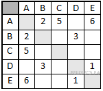

Об экзамене
Первая часть теста включает 13 заданий (А1–А13). К каждому из них даны четыре варианта ответа, из которых нужно выбрать один правильный.
Вторая часть теста состоит из 15 заданий. Ответы к этим заданиям вы должны сформулировать самостоятельно.
Дата сдачи ЕГЭ по информатике в 2015 году - 15 июня.
Разбор заданий
Задание 1
Для кодирования букв О, В, Д, П, А решили использовать двоичное представление чисел 0, 1, 2, 3 и 4 соответственно (с сохранением одного незначащего нуля в случае одноразрядного представления). Если закодировать последовательность букв ВОДОПАД таким способом и результат записать восьмеричным кодом, то получится
- 22162
- 1020342
- 2131453
- 34017
Сначала следует представить данные в условии числа в двоичном коде:
| О | В | Д | П | А |
|---|---|---|---|---|
| 0 | 1 | 2 | 3 | 4 |
| 00 | 01 | 10 | 11 | 100 |
Затем закодировать последовательность букв: ВОДОПАД — 010010001110010. Теперь разобьём это представление на тройки справа налево и переведём полученный набор чисел в десятичный код, затем в восьмеричный (восьмеричное предствление совпадает с десятичным при разбиении тройками)
010 010 001 110 010 — 22162.
Правильный ответ указан под номером 1.
Задание 2
Для таблицы истинности функции F известны значения только некоторых ячеек:
| x1 | x2 | x3 | x4 | x5 | x6 | x7 | F |
|---|---|---|---|---|---|---|---|
| 1 | 0 | 1 | |||||
| 0 | 0 | 1 | |||||
| 0 | 1 | 0 |
Каким выражением может быть F?
- x1 ∧ x2 ∧ x3 ∧ ¬x4 ∧ x5 ∧ x6 ∧ ¬x7
- x1 ∨ ¬x2 ∨ x3 ∨ ¬x4 ∨ ¬x5 ∨ x6 ∨ ¬x7
- ¬x1 ∧ x2 ∧ ¬x3 ∧ x4 ∧ x5 ∧ x6 ∧ x7
- x1 ∨ x2 ∨ ¬ x3 ∨ x4 ∨ x5 ∨ ¬x6 ∨ x7
Проанализируем каждый вариант.
Первый вариант не подходит, поскольку в первой строке переменная ¬x4 = 0, следовательно, F должно обращаться в нуль, что не соответствует таблице истинности.
Второй вариант подходит.
Третий вариант не подходит, поскольку во второй строке переменная x4 = 0, следовательно, F должно обращаться в нуль, что не соответствует таблице истинности.
Четвёртый вариант не подходит, поскольку в третьей строке переменная x4 = 1, следовательно, F должно быть равно 1, что не соответствует таблице истинности.
Ответ: 2.
Задание 3
Таблица 1
| ID | Фамилия_И.О. | Пол |
|---|---|---|
| 1072 | Онищенко А. Б. | М |
| 1028 | Онищенко Б. Ф. | М |
| 1099 | Онищенко И. Б. | М |
| 1178 | Онищенко П. И. | М |
| 1056 | Онищенко Т. И. | М |
| 1065 | Корзун А. И. | Ж |
| 1131 | Корзун А. П. | Ж |
| 1061 | Корзун Л. А. | М |
| 1217 | Корзун П. А. | М |
| 1202 | Зельдович М. А. | Ж |
| 1027 | Лемешко Д. А. | Ж |
| 1040 | Лемешко В. А. | Ж |
| 1046 | Месяц К. Г. | М |
| 1187 | Лукина Р. Г. | Ж |
| 1093 | Фокс П. А. | Ж |
| 1110 | Друк Г. Р. | Ж |
Таблица 2
| ID_Родителя | ID_Ребенка |
|---|---|
| 1027 | 1072 |
| 1027 | 1099 |
| 1028 | 1072 |
| 1028 | 1099 |
| 1072 | 1040 |
| 1072 | 1202 |
| 1072 | 1217 |
| 1099 | 1156 |
| 1099 | 1178 |
| 1110 | 1156 |
| 1110 | 1178 |
| 1131 | 1040 |
| 1131 | 1202 |
| 1131 | 1217 |
| 1187 | 1061 |
| 1187 | 1093 |
В фрагменте базы данных представлены сведения о родственных отношениях. На основании приведённых данных определите фамилию и инициалы родной сестры Лемешко В. А.
- Онищенко А. Б.
- Лемешко Д. А.
- Корзун П. А.
- Зельдович М. А.
- ID Лемешко В. А.: 1040.
- Из таблицы 2 определяем, что ID родителей Лемешко В. А.: 1072, 1131.
- Из таблицы 2 определяем, что ID братьев и сестер Лемешко В. А.: 1202, 1217.
- Из таблицы 1 определяем, что сестра Лемешко В. А. — Зельдович М. А.
То есть правильный ответ указан под номером 4.
Заданиие 4
Для каждого из перечисленных ниже чисел построили двоичную запись. Укажите число, двоичная запись которого содержит ровно две единицы. Если таких чисел несколько, укажите наибольшее из них.
- 8
- 9
- 10
- 11
Представим все числа в двоичной системе счисления:
- 810 = 10002,
- 910 = 10012,
- 1010 = 10102,
- 1110 = 10112.
Из чисел 9 и 10 выбираем число 10, поскольку оно является наибольшим.
Правильный ответ указан под номером 3.
Задание 5
В таблицах приведена протяженность автомагистралей между соседними населенными пунктами. Если пересечение строки и столбца пусто, то соответствующие населенные пункты не являются соседними. Укажите номер таблицы, для которой выполняется условие «Максимальная протяженность маршрута от пункта C до пункта B не больше 6». Протяженность маршрута складывается из протяженности автомагистралей между соответствующими соседними населенными пунктами. При этом через любой насеченный пункт маршрут должен проходить не более одного раза.
| 1 | 2  | 3 |
4

|
- 1
- 2
- 3
- 4
Заметим, что прямого маршрута из C в B нет ни на одной схеме. Из пункта С можно попасть в пункт B слдующим образом:
Схема 1. C-A-B (протяжённость равна 3 + 4 = 7) или С-D-B (6 + 2 = 8).
Схема 2. C-A-B (5 + 2 = 7).
Схема 3. С-A-D-B (2 + 2 + 2 = 6) или C-D-B (2 + 2 = 4).
Схема 4. С-A-B (2 + 5 = 7) или С-D-B (2 + 5 = 7).
Максимальная протяженность маршрута не превышает 6 только на схеме 3.
Правильный ответ 3.
Задание 6
Исполнитель КВАДРАТОР имеет только две команды, которым присвоены номера:
- возведи в квадрат
- прибавь 1
Выполняя команду номер 1, КВАДРАТОР возводит число на экране в квадрат, а выполняя команду номер 2, прибавляет к этому числу 1. Напишите программу, содержащую не более 4 команд, которая из числа 1 получает число 17. Укажите лишь номера команд.
Например, программа 12122 – это программа:
- возведи в квадрат
- прибавь 1
- возведи в квадрат
- прибавь 1
- прибавь 1
Не любое число является квалратом целого числа, поэтому, если мы пойдём от числа 17 к числу 1, тогда однозначно восстановим программу. Полученные команды будут записываться справа налево.
1) Число 17 не является квадратом, значит, оно получено добавлением единицы к числу 16: 17 = 16 + 1 (команда 2).
Повторим рассуждение для числа 25: 25 = 27 - 2 (команда 2).
2) Т. к. мы хотим получить не более 4 команд, то для получения числа 16 возведём в квадрат 4: 16 = 42 (команда 1).
Повторим рассуждени 2) для числа 4: 4 = 22 (команда 1), а для числа 2 применим рассуждение 1): 2 = 1 + 1 (команда 2).
Тогда окончатльно получаем ответ: 2112.
Тест
Первая часть теста включает 13 заданий (А1–А13). К каждому из них даны четыре варианта ответа, из которых нужно выбрать один правильный.
Вторая часть теста состоит из 15 заданий. Ответы к этим заданиям вы должны сформулировать самостоятельно.